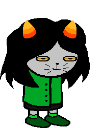

Scout of Blood
Full name: Katnip Sprite
Trolltag/Chumhandle: kittyCat
Quirk: Meow meow hiss meow meow-ow meow me-ow hiss.
Associated Colour: #00ff00
Session: Trollplay (non-Player)
Dancestor: N/A
Modus: N/A
()
Strife Specibus: Clawkind
Server: N/A
Client: N/A
Matesprit: N/A
Kismisis: N/A
Morail: N/A
Auspistice: N/A
Land:
Your land is the LAND OF HEAT AND DESERTS. You initially start the game as KATNIPSPRITE, Litl_E's sprite. You were changed into a troll by random shenanigans, and you've been in the game ever since.
Notes 1:
Notes 2: